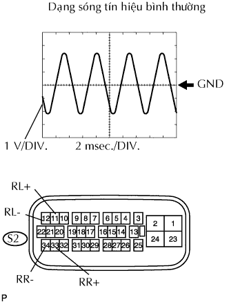
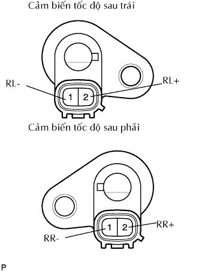
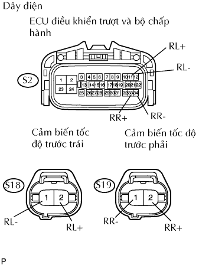
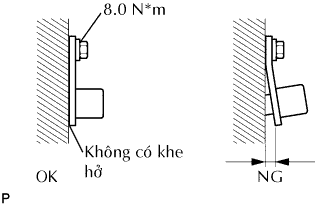

DTC C0210/33 Hỏng tín hiệu cảm biên tốc độ bánh xe sau phải |
DTC C0215/34 Hỏng tín hiệu cảm biến tốc độ bánh sau trái |
DTC C1238/38 Có Vật Thể Lạ Dính vào Đỉnh của Cảm biến tốc độ sau phải |
DTC C1239/39 Có Vật Thể Lạ Dính vào Đỉnh của Cảm biến tốc độ sau trái |
DTC C1273/73 Tín hiệu ra của cảm biến tốc độ sau phải thấp (DTC chế độ kiểm tra) |
DTC C1274/74 Tín hiệu ra của cảm biến tốc độ sau trái thấp (DTC chế độ kiểm tra) |
DTC C1277/77 Thay đổi bất thường trong tín hiệu ra của cảm biến tốc độ sau phải (Chế độ thử DTC) |
DTC C1278/78 Thay đổi bất thường trong tín hiệu ra của cảm biến tốc độ sau trái (Chế độ thử DTC) |
| Số mã DTC | Điều kiện phát hiện DTC | Khu vực nghi ngờ |
| C0210/33 C0215/34 | Khi một trong các tình trạng sau:
|
|
| C1238/38 C1239/39 | Tại tốc độ xe 20 km/h (12 mph) trở lên, tình trạng mà tiếng kêu nằm trong tín hiệu cảm biến tốc độ liên tục trong 5 giây trở lên. |
|
| C1273/73 | Chỉ phát hiện được trong chế độ kiểm tra |
|
| C1274/74 | Chỉ phát hiện được trong chế độ kiểm tra |
|
| C1277/77 | Chỉ phát hiện được trong chế độ kiểm tra |
|
| C1278/78 | Chỉ phát hiện được trong chế độ kiểm tra |
|
| 1.CHỌN PHƯƠNG PHÁP CHẨN ĐOÁN |
Chọn phương pháp chẩn đoán.
| Phương pháp | Đi đến |
| Khi dùng máy chẩn đoán | A |
| Khi không dùng máy chẩn đoán | B |
|
| ||||
| A | |
| 2.ĐỌC GIÁ TRỊ (CẢM BIẾN TỐC ĐỘ PHÍA SAU) TRÊN MÁY CHẨN ĐOÁN |
Kiểm tra danh sách dữ liệu cho chức năng chính xác của cảm biến tốc độ phía trước.
| Hạng mục | Hạng mục/Phạm vi đo (hiển thị) | Điều kiện bình thường | Chú ý chẩn đoán |
| RR Wheel Speed | Cảm biến tốc độ bánh xe (RR) đọc / min.: 0 km/h (0 mph), max.: 326 km/h (202 mph) | Tốc độ xe thực tế | Tốc độ giống tốc độ trên đồng hồ |
| RL Wheel Speed | Cảm biến tốc độ bánh xe (RL) đọc / min.: 0 km/h (0 mph), max.: 326 km/h (202 mph) | Tốc độ xe thực tế | Tốc độ giống tốc độ trên đồng hồ |
|
| ||||
| OK | |
| 3.KIỂM TRA CẢM BIẾN TỐC ĐỘ VÀ RĂNG RÔTO CẢM BIẾN |
|  |
Nối đồng hồ đo sóng vào các cực 33 (RR+) và 34 (RR-), và 11 (RL+) và 12 (RL-) của giắc nối S2 của ECU điều khiển trượt.
Lái xe với tốc độ khoảng 30 km/h (19 mph), và kiểm tra dạng sóng tín hiệu.
|
| ||||
| OK | ||
| ||
| 4.KIỂM TRA CẢM BIẾN TỐC ĐỘ PHÍA SAU |
|  |
Ngắt các giắc nối cảm biến S18 và S19.
Đo điện trở của các cảm biến tốc độ.
| Nối dụng cụ đo | Điều kiện tiêu chuẩn |
| 1 (RL+) -2 (RL-) | 0.6 đến 1.8 kΩ |
| 1 (RL-) - Mát thân xe | 10 kΩ trở lên |
| 2 (RL+) - Mát thân xe | 10 kΩ trở lên |
| Nối dụng cụ đo | Điều kiện tiêu chuẩn |
| 1 (RR-) - 2 (RR+) | 0.6 đến 1.8 kΩ |
| 1 (RR-) - Mát thân xe | 10 kΩ trở lên |
| 2 (RR+) - Mát thân xe | 10 kΩ trở lên |
|
| ||||
| OK | |
| 5.KIỂM TRA DÂY ĐIỆN (ECU ĐIỀU KHIỂN TRƯỢT - CẢM BIẾN TỐC ĐỘ PHÍA SAU) |
|  |
Ngắt giắc nối S2 của ECU.
Ngắt các giác nối cảm biến tốc độ S18 và S19.
Đo điện trở của các giắc nối phía dây điện.
| Nối dụng cụ đo | Điều kiện tiêu chuẩn |
| S2-11 (RL+) - S18-2 (RL+) | Dưới 1 Ω |
| S2-12 (RL-) - S18-1 (RL-) | Dưới 1 Ω |
| S18-2 (RL+) - Mát thân xe | 10 kΩ trở lên |
| S18-1 (RL-) - Mát thân xe | 10 kΩ trở lên |
| Nối dụng cụ đo | Điều kiện tiêu chuẩn |
| S2-33 (RR+) - S19-2 (RR+) | Dưới 1 Ω |
| S2-34 (RR-) - S19-1 (RR-) | Dưới 1 Ω |
| S19-2 (RR+) - Mát thân xe | 10 kΩ trở lên |
| S19-1 (RR-) - Mát thân xe | 10 kΩ trở lên |
|
| ||||
| OK | |
| 6.KIỂM TRA CẢM BIẾN TỐC ĐỘ VÀ RĂNG RÔTO CẢM BIẾN |
Nối đồng hồ đo sóng vào các cực 33 (RR+) và 34 (RR-), và 11 (RL+) và 12 (RL-) của giắc nối S2 của ECU điều khiển trượt.
Lái xe với tốc độ khoảng 30 km/h (19 mph), và kiểm tra dạng sóng tín hiệu.
|
| ||||
| OK | |
| 7.KIỂM TRA XEM MÃ DTC CÓ TÁI XUẤT HIỆN KHÔNG |
Xóa các mã DTC.
Lái xe với tốc độ 30 km/h (19 mph) hay cao hơn trong 60 giây hay lâu hơn.
Kiểm tra các mã DTC.
| Kết quả | Đi đến |
| DTC phát ra | A |
| DTC không phát ra | B |
|
| ||||
| A | ||
| ||
| 8.KIỂM TRA LẮP RÁP CỦA CẢM BIẾN TỐC ĐỘ PHÍA SAU |
|  |
Kiểm tra tình trạng lắp cảm biến tốc độ.
|
| ||||
| OK | |
| 9.KIỂM TRA ĐẦU CẢM BIẾN TỐC ĐỘ PHÍA SAU |
Tháo cảm biến tốc độ phía sau.
Kiểm tra đầu cảm biến.
|
| ||||
| OK | |
| 10.KIỂM TRA RÔTO CẢM BIẾN TỐC ĐỘ |
Tháo moayơ cầu trước.
Kiểm tra các răng rôto cảm biến.
|
| ||||
| OK | |
| 11.KIỂM TRA XEM MÃ DTC CÓ TÁI XUẤT HIỆN KHÔNG |
Xóa các mã DTC.
Lái xe với tốc độ 30 km/h (19 mph) hay cao hơn trong 60 giây hay lâu hơn.
Kiểm tra các mã DTC.
| Kết quả | Đi đến |
| DTC phát ra | A |
| DTC không phát ra | B |
|
| ||||
| A | ||
| ||